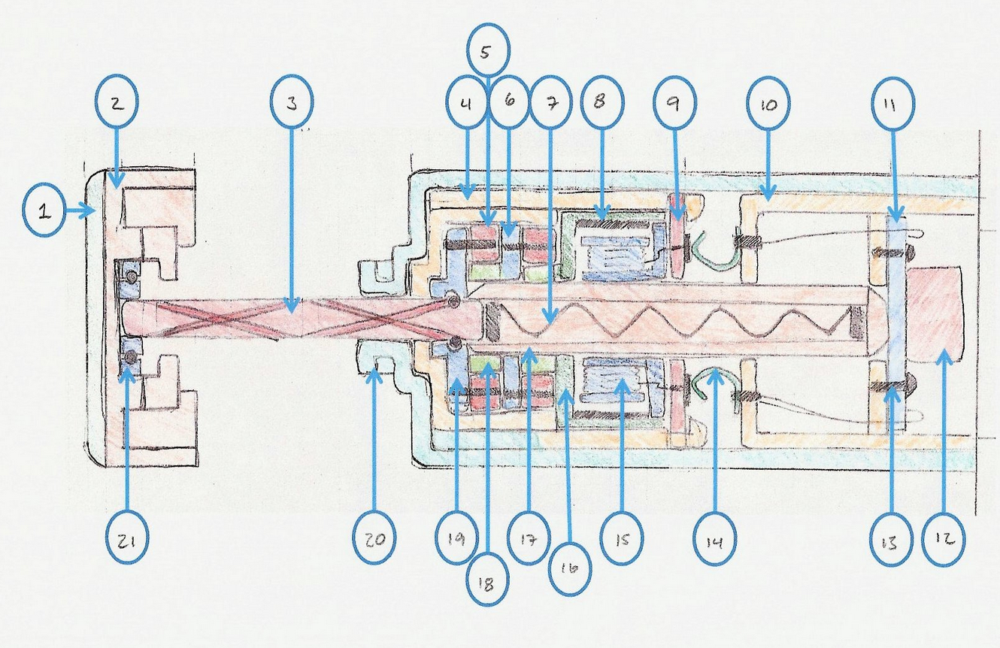

<div class="page">
  <div tabindex="-1" id="notebook" class="border-box-sizing">
    <div class="container" id="notebook-container">

<div class="cell border-box-sizing text_cell rendered"><div class="prompt input_prompt">
</div><div class="inner_cell">
<div class="text_cell_render border-box-sizing rendered_html">
<h1 id="Portfolio">Portfolio<a class="anchor-link" href="#Portfolio">&#182;</a></h1><p>Update: 10/30/2020</p>
<hr>
<h2 id="Index">Index<a class="anchor-link" href="#Index">&#182;</a></h2><hr>
<ol>
<li><a href="#introduction">Introduction</a></li>
<li><a href="#design">Design</a></li>
<li><a href="#modeling-and-automation">Modeling and Automation</a></li>
<li><a href="#testing">Testing</a></li>
<li><a href="#3d-printed">3D Printed</a></li>
<li><a href="#patents-list">Patents List</a></li>
<li><a href="#publications-and-reports">Publications and Reports</a></li>
<li><a href="#other-interesting-projects">Other Interesting Projects</a></li>
</ol>
<hr>
<h2 id="Introduction">Introduction<a class="anchor-link" href="#Introduction">&#182;</a></h2><hr>
<p>Systems Engineer with a passion for innovation.  More than 10 years experience in analysis, modeling, and design of complex systems from submarine sonar to servers.</p>
<hr>
<h2 id="Design">Design<a class="anchor-link" href="#Design">&#182;</a></h2><hr>
<p>These design related projects are listed in chronological order are some mechanical designs which I've led or contributed to significantly.</p>
<h3 id="RF-Secure-Rack">RF Secure Rack<a class="anchor-link" href="#RF-Secure-Rack">&#182;</a></h3><p>I led the mechanical design of the Dell RF shielded rack designed to allow our customers to deploy thousands of IOT devices in a small footprint for application development. Developed with  a smaller footprint and better performance when compared with existing solutions we delivered the only product that met or exceeded all of our customer's requirements.</p>
<p>Links:</p>
<ul>
<li><a href="https://www.delltechnologies.com/en-us/blog/dell-emc-radio-frequency-shielding-mobile-app-development/">Dell Blog, Dell EMC Provides Radio Frequency Shielding Technology for Mobile App Development &amp; Testing</a></li>
<li><a href="https://www.youtube.com/watch?v=Cs7S3C93k-E">YouTube, Dell EMC RF Secure Rack Enclosure</a></li>
</ul>
<p>On this project we were asked to build an IT enclosure with an EMR attenuation of 90 dB while maintaining a light weight, low cost, and the ability to ship loaded to a customer.  The conflicting design requirements included minimizing structure, maximizing transportable weighted capacity, minimizing airflow impedance, minimizing EMI, and maintaining standard serviceability.  This problem gave me the opportunity to develop parametric EMI models for vented surfaces, FEA models to simulate harmonics and random vibration, a tolerance analysis, required jigging, and production test and inspection plans.  The final solution that addressed all these issues required novel developments that resulted in a few patent applications.</p>
<p>This project lasted a year and a half from customer request through first purchase.  During that time I greatly expanded my knowledge of EMI concerns, products, testing, sealing techniques, and modeling. I also advanced my research into structural vibration and impact modeling.</p>
<p></p>
<p></p>
<h3 id="Transportation-Tote">Transportation Tote<a class="anchor-link" href="#Transportation-Tote">&#182;</a></h3><p>I was the shock and vibration SME on the Transportation Tote, a solution for large quantity delivers with a minimal ecological footprint. The Transportation Tote needed to meet all of the damping requirements of existing packaging, last for years without degradation, and not break the bank to manufacture.</p>
<p>Links:</p>
<ul>
<li><a href="https://www.delltechnologies.com/en-us/blog/new-pilot-program-eliminates-packaging-large-scale-server-orders/">Dell Blog, New Pilot Program Eliminates Packaging for Large Scale Server Orders</a></li>
<li><a href="https://www.youtube.com/watch?v=avTVxay0PHg">YouTube, Transportation Tote: Good for the Environment, But Not the Fort</a></li>
</ul>
<p></p>
<p></p>
<h3 id="Dell-DSS-9000">Dell DSS 9000<a class="anchor-link" href="#Dell-DSS-9000">&#182;</a></h3><p>The DSS 9000 is a scalable rack infrastructure aimed at the largest cloud companies.  In deployments of this rack level solution I provided analysis for shock and vibration, tolerances, manufacturability, transportation, and integration.  The solution required maintaining +/- 1.6 mm spacing across the internal width  from the bottom to top of the rack.  This was especially challenging given the bolted together, multi-piece, sheet metal structure.  The power bus bar also proved an interesting challenge in ensuring it would maintain the proper contact force after transportation when fully loaded.</p>
<p></p>
<p></p>
<h3 id="Dell-DSS-7000">Dell DSS 7000<a class="anchor-link" href="#Dell-DSS-7000">&#182;</a></h3><p>The DSS7000 is a very dense storage solution with 100 hard drives in 5U of space.  On this product I participated in the architectural concepts, shock an vibration analysis, and integration and serviceability.</p>
<p></p>
<h3 id="Rack-Hardware">Rack Hardware<a class="anchor-link" href="#Rack-Hardware">&#182;</a></h3><p>Our group at Dell specialized in shipping fully loaded configurations to the largest cloud companies.  This has led to the requirement of many custom brackets and other hardware.  Some of the more interesting solutions included a tip bracket designed to install in 30 seconds, fit within 50 mm, and withstand a 4000 lb. rack tipping 10 degrees.  Another was the development of a bracket to eliminate the need for a crate during transportation of our DSS 9000 racks.</p>
<p></p>
<p></p>
<p></p>
<h3 id="EIA-Flange-Jigs">EIA Flange Jigs<a class="anchor-link" href="#EIA-Flange-Jigs">&#182;</a></h3><p>As mentioned above, IT racks need to maintain a very tight tolerance across the internal width.  This ensures the IT equipment may both be installed and not collapse.  Some IT equipment rely on rails with ledges only a few millimeters long.  To ensure our racks and our partners racks met this requirement I designed a jig that could be easily built, light weight, robust, and ensure the racks were within tolerance.</p>
<p></p>
<h3 id="Modular-Ramp">Modular Ramp<a class="anchor-link" href="#Modular-Ramp">&#182;</a></h3><p>One of the options we offered was white glove delivery in which we would unload the rack, roll it into the DC and install it.  Unloading fully integrated racks at the customer site is a tricky task as some solutions weighed north of 4500 lbs.  Safely removing the racks from the shock pallet required a ramp that could be installed consistently, adjust for an uneven floor, survive a harsh environment, and be simple enough for a single person to set up.</p>
<p>My design goals for this rack was a modular system with each piece weighing less then 50 lbs, easy to assemble, and capable of withstanding a rolling rack weighing 6000 lbs.  The biggest problems for this solution occur when shipping racks with six casters instead of four.  This leads to a moment of instability and an impact when the rack rotates into place on the ramp.  Following the impact, the next biggest challenge was securing the side panels as the ramp passes through maximum deflection.</p>
<p></p>
<h3 id="Cast-AL-Brackets">Cast AL Brackets<a class="anchor-link" href="#Cast-AL-Brackets">&#182;</a></h3><p>In designing a low cost shipping solution I was afforded the opportunity to develop a cast AL bracket that could maintain a rack in position on a shock pallet during the roughest transportation scenarios.  This effort included 3D printed test fits, FEA analysis, and production samples.</p>
<p></p>
<h3 id="Light-Weight-Sonar">Light Weight Sonar<a class="anchor-link" href="#Light-Weight-Sonar">&#182;</a></h3><p>I designed a US submarine sonar system 75% lighter and 90% cheaper than existing solutions.  This is an old solution, but it was a really interesting problem.  I challenged decades of sonar design history and developed a story convincing enough to lead to this systems deployment. This system needed to be easy to install and repair, withstand wave slap and pressure at depth, and be easy to manufacture.</p>
<p></p>
<hr>
<h2 id="Modeling-and-Automation">Modeling and Automation<a class="anchor-link" href="#Modeling-and-Automation">&#182;</a></h2><hr>
<h3 id="2-phase-Concept-Development">2-phase Concept Development<a class="anchor-link" href="#2-phase-Concept-Development">&#182;</a></h3><p>Lately I've really enjoyed building system models of next generation servers that use two-phase fluid for component cooling. The models required solving for the boiling and condensation performance of a variety of power levels, components, fluids, condenser features, and facility water temperatures. These models were validated against published results and are now being compared with test systems.  These models have been used to validate future concepts and explore the potential design space.  Below is a set of images illustrating a solution as the fluid and component surface coating varies.  After that is an image illustrating the wall temperature of select components as the power increases.</p>
<p></p>
<p></p>
<h3 id="Rack-Level-LC-Design-Space">Rack Level LC Design Space<a class="anchor-link" href="#Rack-Level-LC-Design-Space">&#182;</a></h3><p>Dell is ramping up the addition of liquid cooling to its PowerEdge portfolio.  In doing so, we need a method for quickly determining the required liquid components given a desired server, power per rack, and the number of racks in the deployment.  To solve this problem I built a tool in python to solve the thermal-fluid problem.  I then iterated this solution over all of the component variables to identify solutions that would address the immediate customer needs.  This would allow us to prioritize our development resources.  Below is an image of the process followed by a map of solution cost per node as the power per rack and number of racks vary.</p>
<p></p>
<p></p>
<h3 id="Transportation-Analysis">Transportation Analysis<a class="anchor-link" href="#Transportation-Analysis">&#182;</a></h3><p>I developed a custom application to efficiently analyze weeks worth of shock and vibration data reducing analysis time 92%. This data is collected to validate Dell shock and vibration testing or to analyze new transportation methods. This system is a key differentiator for Dell when compared to our competition. Below is an image illustrating the process followed by some example results.</p>
<p></p>
<p></p>
<hr>
<h2 id="3D-Printed">3D Printed<a class="anchor-link" href="#3D-Printed">&#182;</a></h2><hr>
<h3 id="Guardian-Robot">Guardian Robot<a class="anchor-link" href="#Guardian-Robot">&#182;</a></h3><p>After printing the Maker Figure my son and I sat down to design our own robot. During our concept generation session it quickly became apparent that my son, who is four, was asking me to design a robot that looked very similar to one from a video game he had seen. With that drawing as a template we built a few prototypes of the body and legs before settling on the parts that have been uploaded. According to my son, "It's perfect, exactly what I wanted."</p>
<p>This design led to a collaboration with Noe from Adafruit leading to a motorized and two material version.</p>
<p><a href="https://www.thingiverse.com/thing:2359634">Thingiverse, Guardian Robot</a></p>
<p><a href="https://www.thingiverse.com/thing:2391826">Thingiverse, Hackable Guardian Robot</a></p>
<p></p>
<p></p>
<h3 id="NASA-Space-Fabric">NASA Space Fabric<a class="anchor-link" href="#NASA-Space-Fabric">&#182;</a></h3><p>JPL submitted an <a href="https://www.jpl.nasa.gov/news/news.php?feature=6816">article</a> on a "4-D" printed fabric that could be used to protect objects in space.  I used the images and attempted to create a model as close to the original as possible.  I modified the model so that the reflective surface would be printed last (on top).  This allows the surface to be smoother and more similar to the model.</p>
<p>My segments are not as small as those in the image from NASA.  This is due to the diameter of the linking arms.  In the image, the linking arms are probably close to 1 mm.  At that diameter, my printer can not print the linking arms accurately.</p>
<p>The model is 2 X the size of the NASA segments with a linking arm diameter of 2 mm and top size of 16 x 16 mm.  The pitch between the segments is 10 mm.  This model scales easily if you have a printer with a better resolution.</p>
<p><a href="https://www.thingiverse.com/thing:2422015">Thingiverse, Nasa Space Fabric</a></p>
<p></p>
<h3 id="Auxetic-Materials">Auxetic Materials<a class="anchor-link" href="#Auxetic-Materials">&#182;</a></h3><p>I find auxetic materials fascinating and I am always considering where they may find an interesting application.  One thought was for a flat packable bicycle helment.  The model below was used to explore this concept.</p>
<p></p>
<h3 id="Growler-Tap">Growler Tap<a class="anchor-link" href="#Growler-Tap">&#182;</a></h3><p>Based of the Growler Tap design, I decided to try something similar.  The growler tap pressurized the growler allowing easy dispensing of the beer.  I also added a pressure release valve which allows any air trapped to be removed preserving the beer.</p>
<p>With this print I wanted to build something not possible with traditional techniques.  I built in threads and attempted to make every wall a constant thickness.  This lets you visualize the internal structure from the exterior.</p>
<p>Another goal was to make the parts easily washable, a common complaint with the production units.  To achieve this, I added an o-ring that seals the tube which is inserted into the beer.</p>
<p></p>
<h3 id="Sous-Vide-Controller">Sous Vide Controller<a class="anchor-link" href="#Sous-Vide-Controller">&#182;</a></h3><p>I had all of the parts to create a 20 dollar sous vide controller and I was looking at 10 dollars for an off-the-shelf box.  I used this as an opportunity to try and build a custom enclosure for my device.  My goal with the enclosure was to create a part using a single run that was as dense as possible and looked seam-less.</p>
<p></p>
<h3 id="Life-Counter">Life Counter<a class="anchor-link" href="#Life-Counter">&#182;</a></h3><p>I made this for a friend using <a href="https://www.thingiverse.com/thing:2094793">ambrosial's</a> divining top as inspiration.</p>
<p><a href="https://www.thingiverse.com/thing:2377665">Thingiverse, Sensei's Divining Top with Scroll Work</a></p>
<p></p>
<h3 id="Transforming-Motorcycle">Transforming Motorcycle<a class="anchor-link" href="#Transforming-Motorcycle">&#182;</a></h3><p>The model below was built using one of UT's early SLS 3D printers.  The device needed to illustrate a transforming motorcycle using RC car actuators.</p>
<p></p>
<hr>
<h2 id="Patents-List">Patents List<a class="anchor-link" href="#Patents-List">&#182;</a></h2><hr>
<p><a href="https://scholar.google.com/citations?user=FnGkK-1_v4MC&amp;hl=en&amp;oi=sra">20 Granted</a> and 43 Applications. Recent areas include ML, Reliability, Edge, and Liquid Cooling.</p>
<h3 id="Granted">Granted<a class="anchor-link" href="#Granted">&#182;</a></h3><ul>
<li>Liquid cooling of rack information handling system with a plurality of liquid flow paths that enable continued cooling of liquid cooled nodes when one flow path is disrupted</li>
<li>Modular information technology (IT) rack and air flow system</li>
<li>Rack delivery system</li>
<li>Systems and methods for accelerated temperature acclimation of equipment</li>
<li>Transportation pallet and method for depalletizing load</li>
<li>Rack information handling system having modular liquid distribution (MLD) conduits</li>
<li>Rack anti-tip system</li>
<li>Generic rack transportation top cap</li>
<li>Compute device casing that doubles as packaging and shipping container for the compute device</li>
<li>Shock pallet with adjustable anti-tip mechanism</li>
<li>Structure and method for securing and transporting equipment racks</li>
<li>Modular information technology (IT) rack and air flow system</li>
<li>Rack level air flow baffle providing hot aisle separation from rack-inserted it components</li>
<li>Factory configurable shock pallet for various integrated rack weights</li>
<li>High frequency injection for improved false acceptance reduction</li>
<li>Structure and method for securing and transporting equipment racks</li>
<li>Tuned mass-spring damper for electronics enclosure</li>
<li>Systems and methods for reliability control of information handling system</li>
<li>Thermal ducting for improved cooling in rack domains</li>
<li>Shock pallet with adjustable anti-tip mechanism</li>
<li>Rack information handling system having modular liquid distribution (mld) conduits</li>
</ul>
<h3 id="Applications">Applications<a class="anchor-link" href="#Applications">&#182;</a></h3><table>
<thead><tr>
<th style="text-align:center">Quantity</th>
<th style="text-align:left">Area of Application</th>
</tr>
</thead>
<tbody>
<tr>
<td style="text-align:center">1</td>
<td style="text-align:left">Liquid Cooling</td>
</tr>
<tr>
<td style="text-align:center">3</td>
<td style="text-align:left">2-Phase Cooling</td>
</tr>
<tr>
<td style="text-align:center">1</td>
<td style="text-align:left">ML, Reliability</td>
</tr>
<tr>
<td style="text-align:center">12</td>
<td style="text-align:left">Corrosion</td>
</tr>
<tr>
<td style="text-align:center">3</td>
<td style="text-align:left">Graphite, Thermal</td>
</tr>
<tr>
<td style="text-align:center">1</td>
<td style="text-align:left">Heatsink</td>
</tr>
<tr>
<td style="text-align:center">4</td>
<td style="text-align:left">RF Secure Rack</td>
</tr>
<tr>
<td style="text-align:center">12</td>
<td style="text-align:left">EMI, Servers</td>
</tr>
<tr>
<td style="text-align:center">6</td>
<td style="text-align:left">Transportation</td>
</tr>
</tbody>
</table>
<hr>
<h2 id="Publications-and-Reports">Publications and Reports<a class="anchor-link" href="#Publications-and-Reports">&#182;</a></h2><hr>
<ul>
<li><a href="https://docs.google.com/a/embletonblog.com/viewer?a=v&amp;pid=sites&amp;srcid=ZW1ibGV0b25ibG9nLmNvbXxzdGV2ZXxneDo1YzhlYmQ5ZmM4MmE2MTk2">Methodology for the design of hydrophone acoustic baffles and supporting materials</a></li>
<li><a href="https://asa.scitation.org/doi/abs/10.1121/1.2934735">Experimental study of piezoelectret foams as underwater sensors</a></li>
<li><a href="https://docs.google.com/viewer?a=v&amp;pid=sites&amp;srcid=ZW1ibGV0b25ibG9nLmNvbXxzdGV2ZXxneDoyNDdiYTNiMmQzYjBmNjZi">Acoustics in Poro-elastic Sediment: History, Review and Current Research</a></li>
<li><a href="https://docs.google.com/viewer?a=v&amp;pid=sites&amp;srcid=ZW1ibGV0b25ibG9nLmNvbXxzdGV2ZXxneDo2YjBiNDYyNDJhNmZhYTMw">Flexibility-Based Approach to Collaborative Design: Trial Application</a></li>
<li><a href="https://docs.google.com/viewer?a=v&amp;pid=sites&amp;srcid=ZW1ibGV0b25ibG9nLmNvbXxzdGV2ZXxneDo0M2M0MGFmODQzZTBiYTcx">Design of Sound Absorption Treatments for a Music Venue</a></li>
</ul>
<hr>
<h2 id="Other-Interesting-Projects">Other Interesting Projects<a class="anchor-link" href="#Other-Interesting-Projects">&#182;</a></h2><hr>
<h3 id="Twist-Light-Re-Design">Twist Light Re-Design<a class="anchor-link" href="#Twist-Light-Re-Design">&#182;</a></h3><p>During the Spring 2010 semester I took an Engineering Design Theory and Mathematical Techniques course.  In this course I reverse engineered a Brookstone's twist light and developed multiple parametric and adaptive redesign concepts.  Documentation of this course and the results may be found <a href="https://sites.google.com/site/flashlightredesign/">here</a>.</p>
<p></p>
<h3 id="CoolCore-Business-Concept">CoolCore Business Concept<a class="anchor-link" href="#CoolCore-Business-Concept">&#182;</a></h3><p>CoolCore Technologies was a business concept my group developed in a Lab to Market class.  This concept was built around a non-invasive medical device invented by a professor at UT.  With this business plan, we won second place in the Idea to Product competition at UT.</p>
<p></p>
<h3 id="Sea-Turtle-UUV">Sea Turtle UUV<a class="anchor-link" href="#Sea-Turtle-UUV">&#182;</a></h3><p>Before my full time appointment at ARL, I was the mechanical design lead of a UUV designed as a cost effective platform for testing sonar design from our Lake Travis Testing Station.  This project spanned a few years and was the combined effort of mechanical, electrical and computer science engineers.</p>
<p></p>
<h3 id="UTeach-Helmet-Impact-Measuremnt">UTeach Helmet Impact Measuremnt<a class="anchor-link" href="#UTeach-Helmet-Impact-Measuremnt">&#182;</a></h3><p>While working with UTeach, I developed a test stand to allow high school students to measure the force imparted on a head for a variety of helmets.  Challenges in the project stem from the cost limitations and simple construction techniques and user interface required.  The stand pictured here is the first proof of concept.  The final stand was half the cost, with a head cast from a polymer with a similar density to a human head.</p>
<p></p>

</div>
</div>
</div>

    </div>
  </div>
</div>
